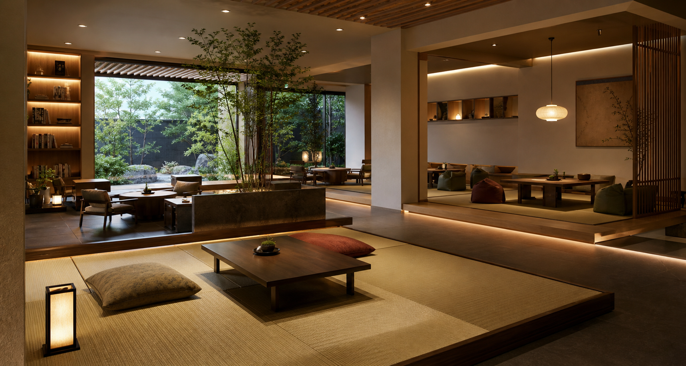
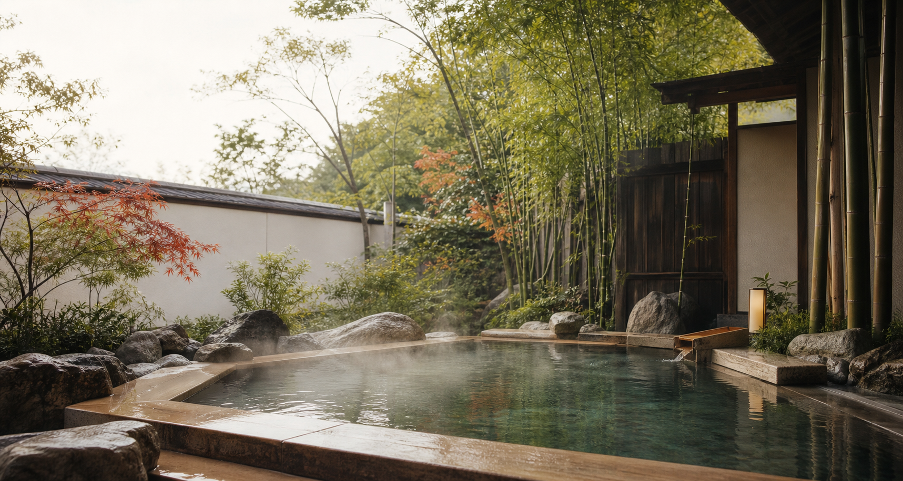
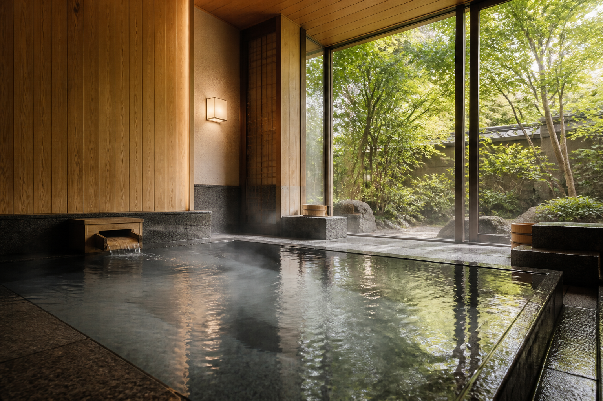
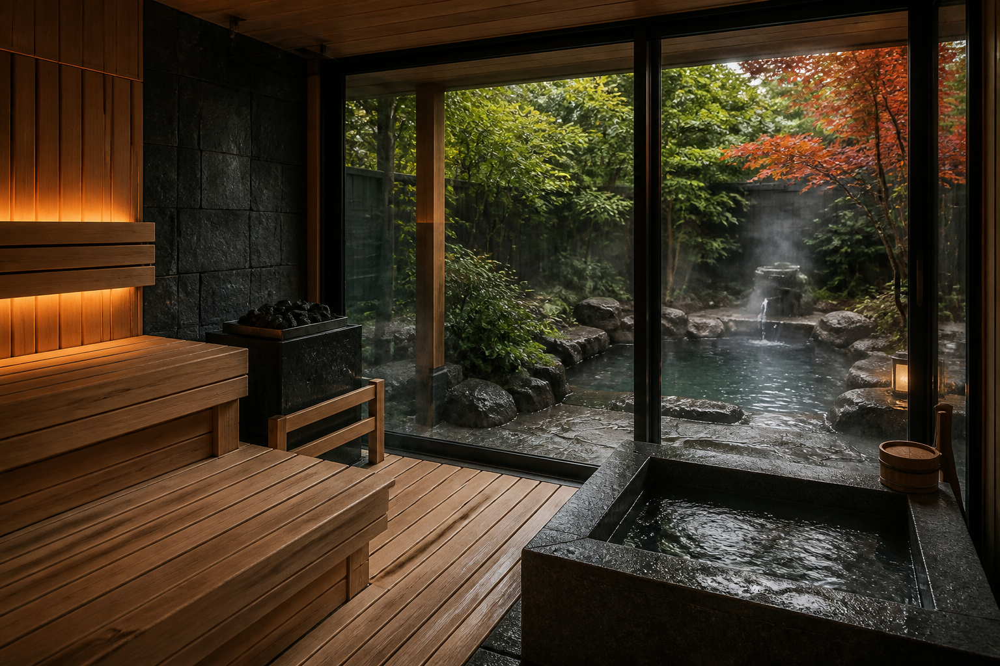
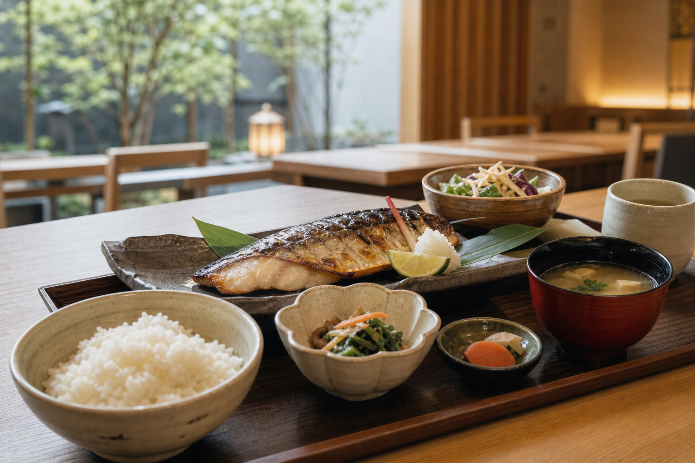

Rest
湯上がりラウンジ
畳席、半個室、読書スペースをゆるやかに分けた静かな休憩エリア。

01 メインビジュアル
日常の熱を静かにほどく、和モダンな湯処。天然温泉、露天風呂、サウナ、 食事、休憩まで、ゆるやかに一日を整える場所へ。

02 温泉の魅力
天然石と木の温もりを合わせた浴場は、湯面のきらめきまで美しく見えるよう、 照明と余白を抑えて設計。朝から夜まで、清潔で落ち着いた湯浴み時間を届けます。
03 サウナ・露天風呂紹介
木の香りが広がる高温サウナ、外気浴に心地よい露天スペース、深めの水風呂。 ひとりでも友人同士でも過ごしやすい、静かな動線に整えました。

04 館内施設紹介
休憩、食事、読書、軽い仕事まで。20〜40代が使いやすい清潔感と落ち着きを、 余白のある館内構成で表現しています。

畳席、半個室、読書スペースをゆるやかに分けた静かな休憩エリア。

湯上がりに重すぎない和定食と甘味。写真映えよりも整う食事へ。
手ぶら利用しやすい備品と清潔なパウダーエリアを標準で用意。
05 過ごし方・利用シーン
大浴場から露天へ。スマホを置いて、湯と庭の静けさに切り替える。
熱・水・休憩を無理なく巡れる動線で、初めての人にも入りやすく。
和定食、甘味、畳の休憩席。友人との会話も、ひとり時間も自然に。